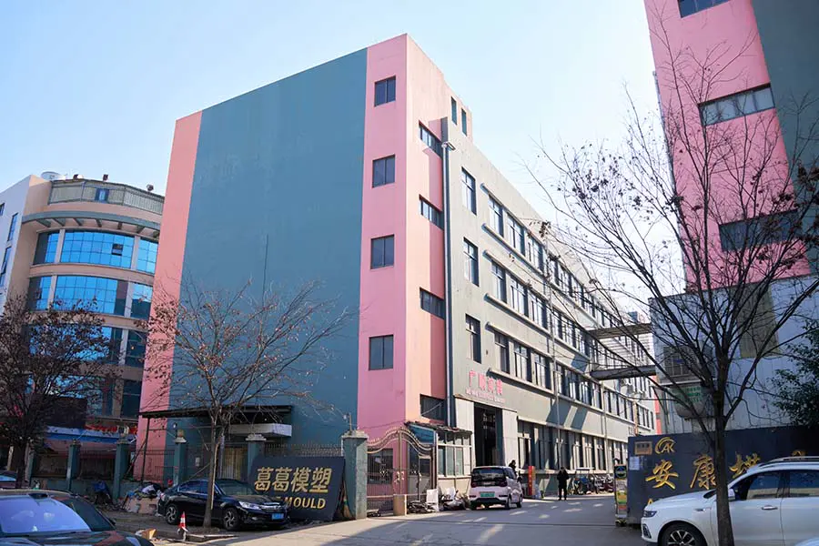
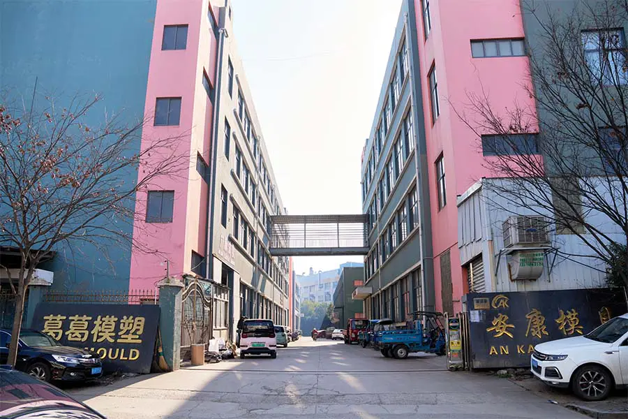
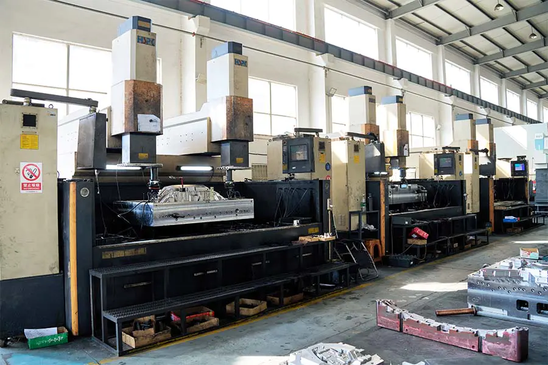
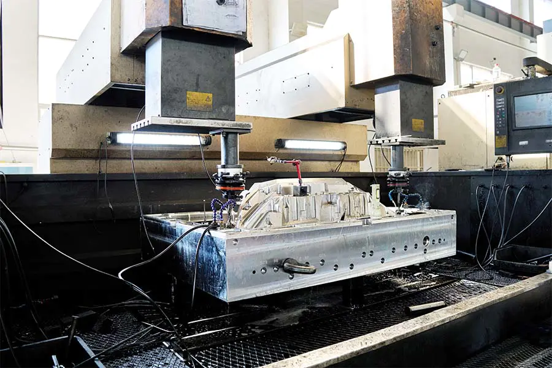
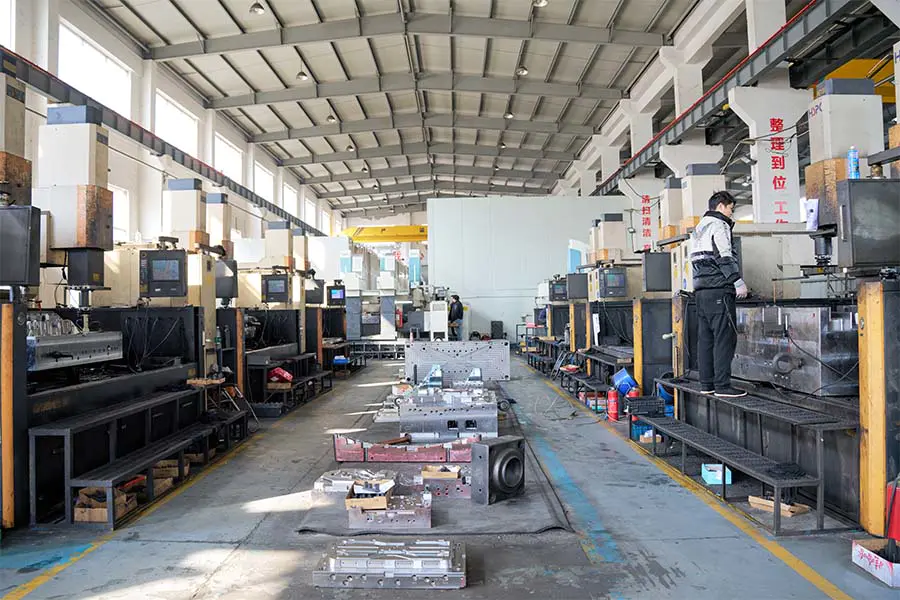
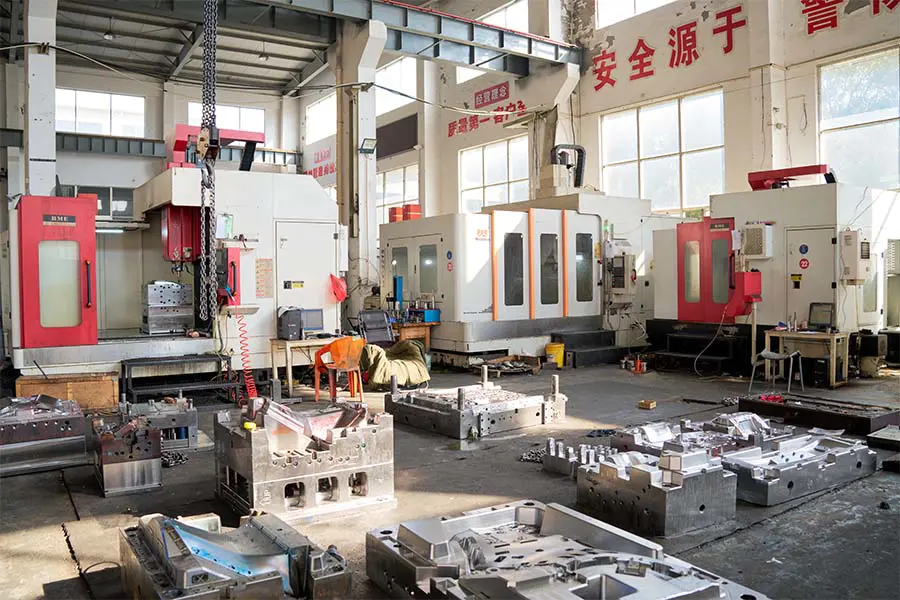
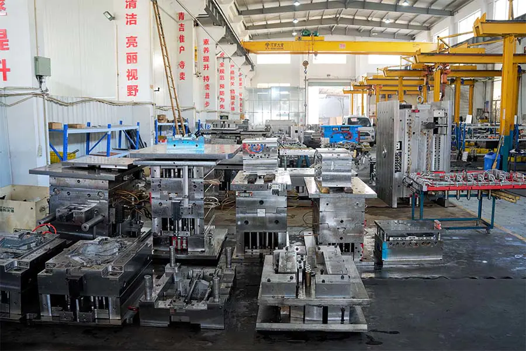

_0024_DSC07715.jpg
Category: Exterior
Alt: "Gege Mould / Jingling Moulding Technology manufacturing facility — factory building exterior in Huangyan District, Taizhou"
Placed: about.html facility gallery #1

_0023_DSC07722.jpg
Category: Exterior
Alt: "Gege Mould factory facility — exterior view of the 3,000 m² mold manufacturing plant in Taizhou, China"
Placed: about.html facility gallery #2

_0022_DSC07723.jpg
Category: Factory Environment
Alt: "Gege Mould manufacturing workshop interior — CNC machining and mold assembly work areas in the Taizhou facility"
Placed: about.html facility gallery #3

_0021_DSC07726.jpg
Category: Product Equipment
Caption: "CNC machining center at the Gege Mould manufacturing facility in Taizhou, China. Precision machining of injection mold cavity inserts on advanced multi-axis CNC equipment — every mold component is machined and verified in-house before assembly and tryout."
Placed: capabilities.html → Mold Design section

_0020_DSC07728.jpg
Category: Product Equipment
Caption: "Advanced machining equipment at the Gege Mould tooling workshop. The facility is equipped for high-speed CNC milling, wire-cut and sinker EDM, surface grinding, and precision polishing — all under one roof for complete in-house mold fabrication."
Placed: capabilities.html → Precision Tooling section (2nd figure)

_0019_DSC07730.jpg
Category: Product Equipment
Caption: "Precision multi-axis CNC machining of metal tooling components at the Gege Mould facility. Modern CNC machining centers hold tolerances to ±0.005 mm — critical for automotive injection molds where cavity accuracy directly determines molded part quality."
Placed: capabilities.html → Precision Tooling section (main figure)

_0018_DSC07731.jpg
Category: Factory Environment
Caption: "Manufacturing workshop at the Gege Mould / Jingling Moulding Technology facility in Huangyan, Taizhou. The 3,000 m² plant houses CNC machining centers, EDM equipment, and injection molding machines — all organized for efficient mold production workflow."
Placed: capabilities.html → Injection Molding section (fig.1)

_0017_DSC07736.jpg
Category: Factory Environment
Alt: "Gege Mould manufacturing workshop — tooling assembly and production mold preparation area"
Placed: about.html facility gallery #8

_0016_DSC07739.jpg
Category: Product Equipment
Caption: "Quality inspection and precision measurement at the Gege Mould facility. Every injection mold component undergoes dimensional verification using calibrated CMM equipment, digital height gauges, and surface profilometers — all traceable to international standards."
Placed: quality.html → Inspection Equipment section (fig.1)

_0015_DSC07743.jpg
Category: Factory Environment
Caption: "Completed injection mold tooling at the Gege Mould facility. Each mold undergoes final inspection, T1 sample dimensional reporting, and crating preparation before shipment to the customer's production line."
Placed: capabilities.html → Injection Molding section (fig.2)

_0014_DSC07745.jpg
Category: Factory Environment
Caption: "Manufacturing workspace at the Gege Mould quality-controlled facility. The ISO 9001 certified production environment is organized for systematic workflow, traceability, and consistent quality output — from incoming material inspection through final mold audit and shipment."
Placed: quality.html → Inspection Equipment section (fig.2)

_0013_DSC07747.jpg
Category: Product Equipment
Caption: "Production equipment at the Gege Mould injection molding workshop. The facility supports in-house mold tryouts with production-grade materials, T1 sample dimensional reporting, and serial injection molding production across a range of tonnages."
Placed: capabilities.html → Injection Molding section (fig.3)